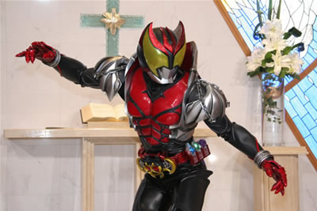
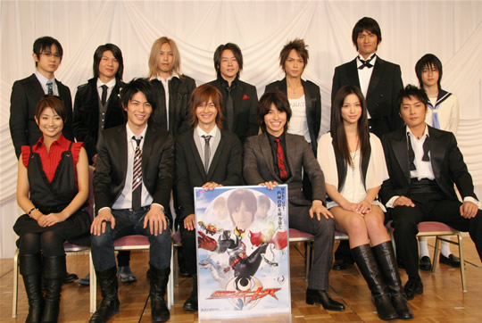
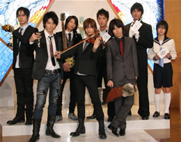
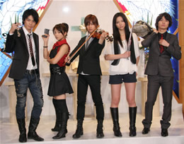
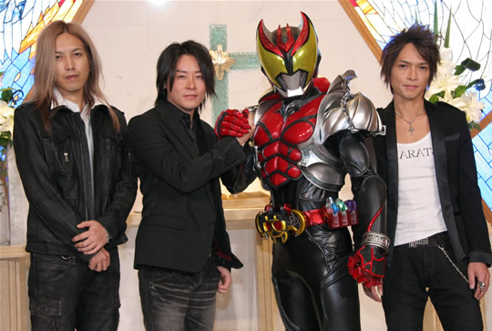

2008年01月16日

１月15日、当社制作の新番組『仮面ライダーキバ』（１月27日スタート／毎週日曜／朝８時～８時30分／テレビ朝日系）の制作発表が、東京・
ホテル メトロポリタンにて行われた。
2000年にスタートした “平成仮面ライダーシリーズ”
も今回で９作目。昨年度の『仮面ライダー電王』の大ヒットを受け、新番組は更にその可能性を広げるサプライズな内容。正義のヒーロー・仮面ライダーのモ
チーフが“ヴァンパイア”という意外性に加え、スタイリッシュなライダーが、モンスターのパートナーを従えて戦うというアクションや、22年の時を越えた
“父子ライダーの戦い”を描く壮大なストーリーは、正に「平成ロマネスク」。平成仮面ライダー史上初となる10人の俳優、声優陣が登場した会見では、１年
に渡って繰り広げられるこの大河ロマンへ、詰め掛けた報道陣から大きな期待が寄せられた。
|  |
インタビュー
| 小野寺章・石森プロ代表取締役社長 生前、石ノ 森章太郎は、仮面ライダーシリーズはいつの時代にあっても、 子どもたちに夢や希望、元気や勇気を与えることが重要な使命であると述べておりました。今年は石ノ 森章太郎の生誕70周年の佳節にあたりますが、その最初を飾る作品が『仮面ライダーキバ』ということになります。電王に引けをとらない、更なる挑戦を試み た意欲作です。ご家庭でも、特にお父さんと息子さんとが、一緒に応援してもらえる作品になるよう、スタッフ一同、力を尽くして参ります。どうかみなさん、 ご期待ください。 |
|
| 梶淳・テレビ朝日プロデューサー 昨年大ヒットとなった『仮面ライダー電王』は、平成ライダーシリーズ８作目にして、これだけ大きな可能性が示せたということで、我々にとって励みになりま した。９作目にあたります『仮面ライダーキバ』は、このスピリッツを持って、新たな挑戦をしていきたいと思います。 まずモチーフがヴァンパイアです。素顔を仮面に隠して、同族と争わなくてはならない孤高の戦士・仮面ライダーに、ヴァンパイアはぴったりなキャラクターで す。その主人公がパートナーとして、狼男、半魚人、フランケンを従えて戦っていく。スタイリッシュな格好よさと、今の子どもたちに親しみやすい、パート ナーモンスターとの戦いで、子どものハートを掴みたいと思っています。 ふたつ目には“スパイラル・ドラマ”という新しいジャンルに挑戦します。今回は“過去編”“現代編”のふたつの時代が交互に、綿密に絡みあって一つの大河 ストーリーを形成していきます。そこで描くテーマは“親子”です。いまや二世代ヒーローとなった仮面ライダーに相応しいテーマを描いていきたいと思いま す。 みっつ目には、変身前の魅力的なキャラクターたちを配しました。アクションヒーロー番組ですから、変身後のアクションやCGにはもちろん力を入れています が、それ以上に今年は“過去編”“現代編”どちらにも非常に多くのキャラクターが登場します。これによって、子どもからおじいさんおばあさんに至るまで、 いろんな人が見て好きになれるキャラクターが必ずいるような、そんな布陣をご期待ください。 ３つのポイントをひとことで表すなら「平成ロマネスク」と考えています。従来の“ヴァンパイア”から連想されるゴシックホラーの要素はあえて排除していま す。日曜あさ８時にふさわしいエンターテインメントの番組として、「平成ロマネスク」がスタートします。ぜひご協力をお願いいたします。 |
|
| 武部直美・東映プロデューサー 前作『仮面ライダー電王』のヒットの要因は、芝居の力であったと考えております。イマジンを演じる声優さんを初め、自分のキャラクターを伝えるキャストが 揃いました。 平成ライダーは１年間、キャストの方に専念していただくので、オーディションで新人の役者さんを選ぶことが多いのですが、今までは「芝居が下手でもオーラ があればいい」とか「芝居はやってるうちにうまくなればいいんだ」と言っていたんですが、今回は演技力や表現力に力を入れてキャスティングを進めさせてい ただきました。 これから10人のキャストをご紹介いたしますが、こんなに大勢揃うのは、制作発表史上初めてのことです。そこで皆さんの目で確認していただければと思いま す。このキャストの力を信じてみたいと思います。 もう一点はアクションです。１・２話を撮っていただいた田﨑監督と、平成ライダーシリーズの、この先の発展がどこにあるんだろうとお話していて、やはりア クションに力を入れていきたいという結論になりました。この１・２話は生身のアクションが多いんですね。それをキャストの方たちに、吹きかえを極力使わず 体当たりで演じてもらいました。もちろんライダーに変身した後も、話数ごとにテーマを決めて、見たことのない映像を提供していきたい。男の子向け子ども番 組として、一番最初に触れるヒーローもののアクションを、子どもたち心に刻み込んでいくことを使命として考えています。 芝居の力とアクションは、ドラマとしては基本の基で、お客様にはあって当たり前ものです。では新しいものとして何を提供しようかと考え、“過去”と“現 在”をまったくふたつのパートに分け、物語の二重構造という新しい見せ方をしていこうということになりました。22年前の、主人公のお父さんの時代を、現 代と並行して、同じ分量で描いていきます。平成ライダーの特徴である“１年間50話を通じて描かれる物語”、簡単に言ってしまうと壮大なドラマチックな、 なんて単語になってしまうんですが、それを追求していきたい。これは１話とか２話を見ていただいただけでは、ほんとうの面白さは判らないかもしれません。 20話くらいまで見て始めてわかる、とか、最終回で始めてわかる、ということになるのかもしれません。ただ、せっかく伝統ある“仮面ライダー”の名前を頂 いているので、それくらいの冒険はしてみてもいいんじゃないか。わかりやすくて、明るくて、簡単でということがもてはやされていますが、あえてこれに挑戦 しようと思っていますので、ぜひ１年間お付き合いください。 |
|
| 瀬戸康史（紅渡） 撮影が始まって一ヶ月、スタッフと共演者のみなさんのおかげで、やっと実感と自信がもてるようになりました。僕が演じる紅渡という少年は、僕と似ていると ころが多くて、演じていて楽しかったです。こんな弱々しい紅渡くんから、強くて格好いい仮面ライダーキバまで一生懸命演じて、多くの人に見てもらえるよう 頑張ります。 |
|
| 武田航平（紅音也） 仮面ライダーという歴史と伝統のある作品に携われたことを心より感謝すると同時に、今ままで演じてきた方々に敬意を払 い、主役を演じることに誇りをもって精一杯演じたいと思います。音也は、どの時代にもはまらない男です。その男らしさ、色気のようなものを、自分の生きて きた人生から全て引き出していきたいと思います。 |
|
| 加藤慶祐（名護啓介） ２ヶ月前にこの役をやらせていただくことが決まったんですが、小さいころから大好きだった仮面ライダーに出演することができて、凄く嬉しく思っています。 今回、はじめてアクションに挑戦しているんですが、練習も面白く、ヴァンパイアハンターを力を入れて演じていきます。 |
|
| 柳沢なな（麻生恵） これほど長い期間にわたる作品は初めてなので、自分を見失わないように、マイペースで私らしくやっていきたいと思って います。ライダーやレンジャーものは、どうしても男の子のファンが多いと思うんですけれども、今回で女の子のファンが増えていったらいいなと思っていま す。子どもたちのヒーローになれるように、精一杯がんばります。 |
|
| 高橋優（麻生ゆり） 麻生ゆりという22年前の女の子を演じるんですけど、当時のファッション、ケミカルウォッシュだとか、トサカヘアとか 太い眉毛とか（笑）に挑戦しているので、大人の人には懐かしく見ていただければいいかなと思います。このドラマを通して、高橋優も麻生ゆりも成長していき たいと思います。 |
|
| 熊井幸平（襟立健吾） 健吾という役は、バンドマンでギタリストをやってまして、クラシック音楽が嫌いということで、主人公の渡と、ストー リーが進むにつれて対極してくると思うんですが、最初のうちは謎多いキャラクターです。やるからには全力を出してやり切っていきたいと思います。 |
|
| 松田賢二（ガルル＝狼男人間体） 仮面ライダーは三年前に携わっていたんですが、またお声掛けいただいて嬉しく思っています。求められた以上の仕事をし ていきたいと思っています。 |
|
| 小越勇輝（バッシャー＝半魚人人間体） みんなに見てもらって、喜んでもらえるよう、精一杯頑張りますのでよろしくおねがいします。 |
|
| 滝川英治（ドッガ＝フランケン人間体） 仮面ライダーという歴史のある作品をやらせていただくということで、本当に光栄に思っております。皆さんの心に、記憶 に残る芝居をしたいと思っています。 |
|
| 杉田智和（キバットバットIII世の声） 杉田役のキバットです。あ、逆でした（笑）キバット役の杉田です。キバットの台詞で「キバッテいくぜ！」とうのがある んですが、命を燃やすタイミングで熱くなることが、決して恥ずかしいことではないということが、視聴者の皆さんに伝わればと思っています。これから渡くん をうまくサポートしていければと思っています。 |
質疑応答
Q 出演が決まったときの、ご家族、周りの方々の反応を教えてください。
| 瀬戸： | 特にお父さんが、ちょうど仮面ライダー世代で、とても喜んでくれました。 |
| 武田： | やべぇ、変身できる（笑）って思いました。ウチの父親も仮面ライダーが好きで、ビデオでよく見ていて、 僕も一文字隼人の変身ポーズが好きで（笑）もしそういう機会があったらそういうポーズをしちゃおうかなと思うくらいです（笑） |
| 加藤： | 電話で家族に伝えたんですが、ホントっ！？て２、３度聞かれました（笑）おじいちゃんが喜んでくれて、一年間しっかりやれよ、っ て言ってくれましたね。でも最初おじいちゃんは『ウルトラマン？』って聞き返してきて（笑）おじいちゃんに覚えてもらえればいいなと思ってます（笑） |
| 柳沢： | 私も天然ボケのお母さんが『ウルトラマン』と聞き間違えて、親戚中に報告してしまって（笑）あとあと訂正したんですけれども。私
は小さいころから『セーラームーン』が大好きで真似していたり、小さい弟と変身ごっこをしてたので、とても嬉しく思いました。 |
| 高橋： | 私は親に言ったときに『何色やんの！？』って言われて（笑）お父さんには悪役をやると思われたみたいで『ドラキュラ役？』（笑） どうも私がドラキュラっぽいイメージがあるみたいで（笑）初めてのドラマが仮面ライダーというのは嬉しいし、頑張りたいなと思います。 |
| 熊井： | 僕も姪っ子と甥っ子がちょうど小学生で、『嘘やん！』って、何でも疑う年頃なんですね（笑）やるからには正義感を持った、芯のあ る演技をしていきたいと思います。 |
| 松田： | 『仮面ライダー響鬼』の時は大切なものとして残ってますし、今回もそうなるように大切に役に取り組んで・・・あ、質問が違います ね、家族ですね（笑）家族にはまだ報告してないので、今晩報告しようかと思います（笑）まだ謎に包まれた役です。悪なのか正義なのか、判らないなりに楽し んでいこうと思います。 |
| 小越： | オーディションのときから、すごいやりたい役で、受かったときは嬉しかったです。家族も喜んでくれてよかったです。（なにか声を かけてもらいましたか？）あ、ちゃんとやれよ、と（笑） |
| 滝川： | 僕も決まったときは嬉しかったです。信じられなくて、今日皆さんの前に立っていることで、あ、本当に自分でやるんだなということ に気がつきました（笑）家族は、意外と反応が薄いんですが（笑）作品を作っていくうちに、家族も実感が沸いてくるんじゃないかなと思ってます。 |
| 杉田： | ２年前に、『仮面ライダー電王』に出演した遊佐浩二さんからですね、杉田君も大人になったのだから、そろそろ大人のファッション
を目指しなさいということで、１号ライダーの複製ベルトをプレゼントをされまして（笑）考えてみればこれは何かの始まりだったのかな、見事に釣られてしま
いました（笑） 今回、最初決まったときに、「仮面ライダーでヴァンパイア」ということで、自分の位置がドラキュラで、狼男がいる、フランケンがいる、すなわちこれは番組 が始まるときに「さあ、はじまるザマスよ！」って言うのかなって、そんなわけねえな（笑）失礼いたしました（笑）これからの反応が楽しみです。 |
Q 撮影に入られ
て、難しかったり大変と思ったエピソードを教えてください。 |
|
| 瀬戸： | ヴァイオリンをうまく弾いている様を見せるのがすごく難しくて、それを今練習中です。触ったこともなくて、普段使わない筋肉を使 うという感じです。 |
| 武田： | 難しいとことや苦労しているところは、正直ありません。それくらい現場は楽しいですし、活気があるんで、そう思ったことが全くな
いんですね。 言い忘れたことがあるんですけど、平成ライダーで最高のものにするので！約束します！ |
| 加藤： | 僕の役柄はエリートということで、完璧でないといけないな、というところを一番気をつかっています。最初はアクションが大変だっ たんですが、アクション監督にしごかれながら、アクションは僕の見せ場だと思ってやっています。大変なこともこれから出てくるとは思いますが、楽しんで、 格好よく見せられればいいなと思っています。 |
|  |  |
最後に、スペシャルゲストとしてオープニングテーマ「Break the Chain」を歌うTourbillonが登場した。
|  |
| RYUICHI： | 今回は仮面ライダーの主題歌ということで気合が入りました。小さなころは、アクションものとして悪を退 治してくれるのを見ていたんですが、大人になってその物語に注目しますと、ドラマとしてもしっかりしているんだなと、今回は子どもから、お父さんお母さん まで楽しんでくれたらいいなあと、そんな思いで歌わせていただきました。ぜひみなさん、パワープレイで聴いてください。 |
『仮面ライダーキバ』
2008年１月２７日（日） 朝 08：00 スタート！
（C）2008 石森プロ・テレビ朝日・ADK・東映
- 2010.04.02 NEW
- 『カメンライダードラゴ ンナイト』きせかえコンテンツ配信のお知らせ
- 2010.04.01 NEW
- 「東映特撮BBアーカイブス」4 月配信作品のご案内
- 2010.04.01 NEW
- 『宇宙からのメッセージ 銀河大戦』の配信開始について
- 2010.04.01 NEW
- ケータイ向け情報サイト 『東映MOBILE』新コーナーのお知らせ
- 2010.03.30 NEW
- 東映チャンネル 特撮ヒーロー『仮面の忍者 赤影』放送スタートのお知らせ